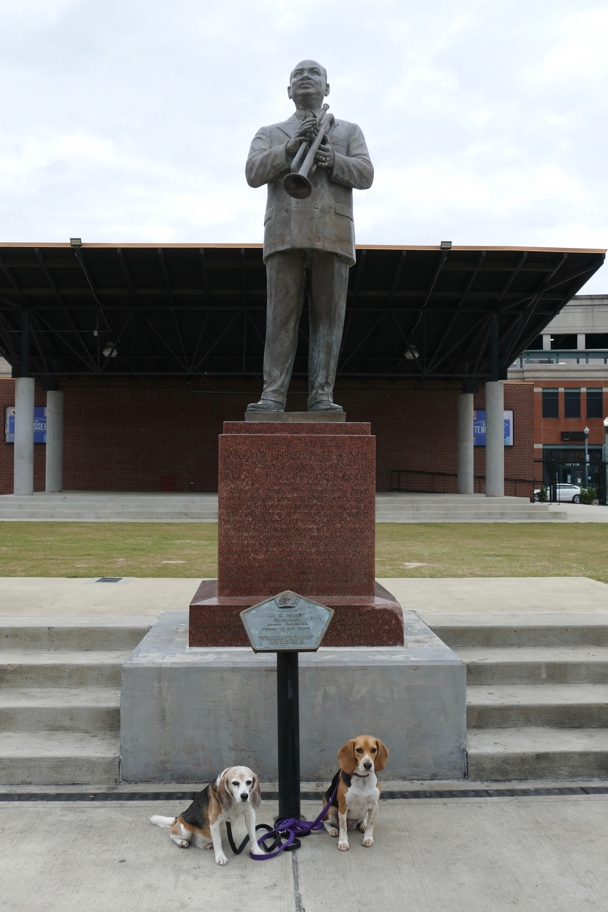

<--Previous Up Next-->

Dogs are allowed on Beale Street in the morning when the crazy bar scene isn't going. W.C. Handy was born in Florence, Alabama, but wrote his landmark "Memphis Blues" and "St. Louis Blues" here.
Halley Beagle Memphis Tennessee Wallace Beagle